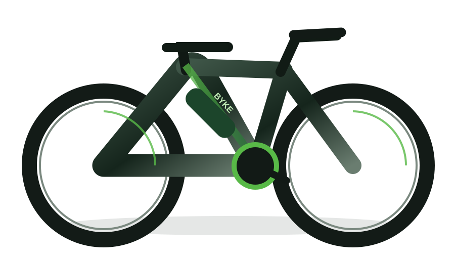

DESIGN PARA SE MOVER
Conheça sua
próxima BYKE.
Marlim, Tuna e Wale: três personalidades para diferentes caminhos. Conheça a proposta e as características de cada bicicleta.
Explorar modelos ↗
MARLIM · ESPORTIVA
Encontre seu ritmo.
A agilidade do marlin inspira nossa bike de perfil esportivo. Com guidão curvo e uma posição de pedalada mais inclinada, a Marlim é para quem gosta de movimento, ritmo e trajetos no asfalto.
- Autonomia estimada
- Até 70 km por carga
- Recarga completa estimada
- 3–4 horas
- Posição de pedalada
- Mais inclinada
- Percurso proposto
- Asfalto
Agilidade · Estilo esportivo · Asfalto
TUNA · URBANA
Energia para acompanhar seu dia.
A Tuna traduz resistência em uma bike feita para a rotina. Sua proposta combina maior autonomia de bateria, posição confortável e praticidade. A cesta e o bagageiro acomodam seus pertences, enquanto o quadro baixo facilita cada parada pelo caminho.
- Autonomia estimada
- Até 100 km por carga
- Recarga completa estimada
- 4–6 horas
- Posição de pedalada
- Mais ereta
- Percurso proposto
- Deslocamentos urbanos
Autonomia · Conforto · Praticidade
WALE · CROSS
Presença para explorar.
A força e a presença da baleia dão personalidade à Wale. Com pneus largos, suspensão dianteira e traseira e visual robusto, ela traz uma proposta aventureira para quem quer explorar caminhos de terra e percursos irregulares.
- Autonomia estimada
- Até 60 km por carga
- Recarga completa estimada
- 5–7 horas
- Posição de pedalada
- Intermediária
- Percurso proposto
- Terra e caminhos irregulares
Robustez · Estabilidade · Aventura
LADO A LADO
Encontre seu caminho.
| Características | MARLIM | TUNA | WALE |
|---|---|---|---|
| Autonomia estimada por carga | Até 70 km | Até 100 km | Até 60 km |
| Tempo estimado de recarga completa | 3–4 horas | 4–6 horas | 5–7 horas |
| Posição de pedalada | Mais inclinada | Mais ereta | Intermediária |
| Percurso proposto | Asfalto | Deslocamentos urbanos | Terra e caminhos irregulares |
| Suspensão dianteira e traseira | — | — | ✓ |
| Cesta dianteira | — | ✓ | — |
| Bagageiro traseiro | — | ✓ | ✓ |
JÁ ENCONTROU SUA BYKE?
Conheça os planos.
Veja como funciona a assinatura e descubra as modalidades disponíveis.
Conhecer planos ↗